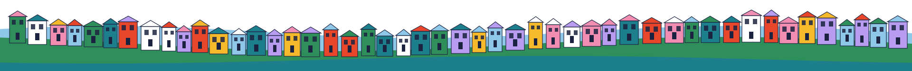

1 · The role
Neighborhood Hosts
Teams of neighbors whose job is to bring people together, help them decide, and recruit more of their neighbors to host.
Welcome
New neighbors, stoop coffees, gatherings, build-a-thons.
Facilitate
Neighbors with different views working through live questions together.
Multiply
Success is measured by how many neighbors become hosts themselves.
Sunset Host → co-hosts → a network of hosts on each block.
Each neighborhood gets a small host team named for its place: the Sunset Host, the Mission Host. The role is designed to multiply: hosts become co-hosts, then hosting collectives, until block-level hosts are a known and celebrated role. Philanthropy funds the role first, on the community health worker path, with the goal of moving it into public budgets.

2 · The place
Neighbor Rooms
A room in every neighborhood where neighbors meet, work through hard questions, and build things together.
Start with what exists
Libraries, rec centers, churches, cultural centers, civic hubs.
Fill the gaps
Vacant storefronts become civic space.
Own what serves us
Proven rooms move into permanent community ownership.
In the room: community meetings · coworking · build-a-thons · club fairs · deliberations. Each neighborhood also gets a fund its neighbors direct: microgrants, tutoring, clubs, tool lending.
We start by mapping spaces neighbors already use and building capacity there, then rent where there are gaps. Many rooms will cost close to nothing. Filling empty storefronts with civic life is good for the whole block.
3 · The toolkit
Relational Tech + Deliberation Tech
Open tools every host can use, so one neighborhood’s success is the next one’s head start.
Relational tech
The Relational Tech Project’s Relational Builder and neighbor-built tools, like the dozen already live in the Outer Sunset.
Deliberation tech
Bloom’s CivicOS and civic assemblies. In Fort Collins, an assembly produced a recommendation voters approved with 68%.
Commons + network
An SF Commons of Ideas to remix, and hosts who train and coach each other.
Live example: screens and AI in SFUSD classrooms. The policy goes to the school board in March 2027. Recommendations from a dozen neighborhoods could reach it first, with their reasoning attached.
Hosts pick the process that fits the question, from a house meeting to a neighborhood assembly. The Sunset Host convenes parents, teachers, and principals in the Sunset Neighbor Room; the Mission Host borrows the process the next week. Along the way neighbors find each other’s skills and start tutoring, theater, and reading clubs.